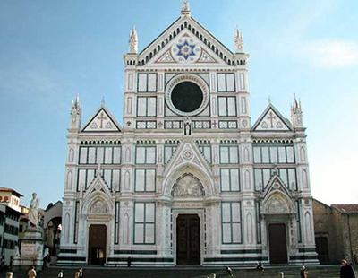
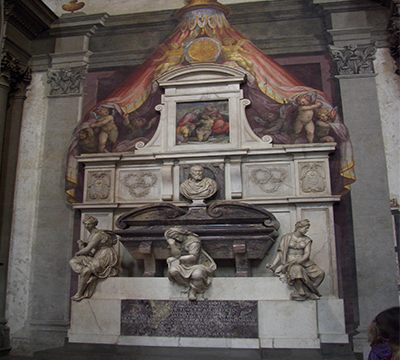

Osnovni podaci:
| Naziv: | Bazilika of Santa Croce |
|---|---|
| Adresa: | Piazza Santa Croce, 16 Firenca |

Bazilika Svetog Krsta (ital.: Basilica Santa Croce) je franjevačka crkva u Firenci i manja bazilika rimokatoličke crkve. Nalazi se na trgu Svetog Krsta (Piazza Santa Croce), istočno od Duoma.
Bazilika je najveća franjevačka crkva na svijetu. Najznačajnija obilježja su šesnaest kapelice, mnoge od njih ukrašene su freskama Giotta i njegovih učenika. Legenda kaže da je bazilika osnovana od strane samog svetog Franje.Gradnja današnje crkve, koja bi zamijenila starije zgrade, je započela 12. svibnja 1294, vjerojatno Arnolfo di Cambio. Posvetio ju je 1442 papa Eugen IV. Tlocrt je egipatski ili Tau križ (simbol svetog Franje), 115 metara u dužinu s tri broda odvojena linijama osmerokutnih stupaca. Na južnoj strani crkve je samostan.


Zvonik je sagrađen 1842, tako što je zamijenjen stari zvonik koji je oštećen od udara groma.Neogotički mramorna fasadu izradio je Nicolo Matas 1857-1863.
Židovski arhitekt Niccolo Matas iz Ancone, dizajnirao je u 19. stoljeću neo-gotičku fasadu Crkve, istaknuvši Davidovu zvijezda. Matas je želio biti pokopan sa svojim vršnjacima, ali pošto je bio Židov, pokopan je ispod trijema i nije unutar zidina.
U crkvi su sahranjene mnoge poznate ličnosti: Leon Battista Alberti, Leonardo Bruni, Niccolò Machiavelli, Michelangelo Buonarroti, Galileo Galilej, Enrico Fermi, Dante, Raffaello Morghen.
| Naziv: | Bazilika of Santa Croce |
|---|---|
| Adresa: | Piazza Santa Croce, 16 Firenca |